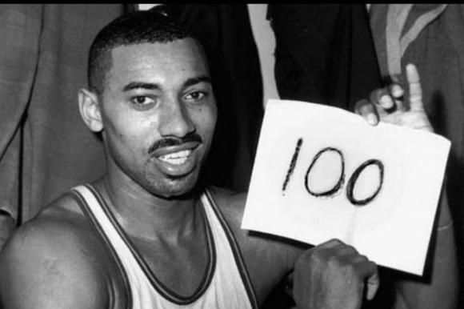

O Golden State Warriors é uma equipe profissional de basquete sediada em São Francisco, na Califórnia. A franquia compete na conferência oeste, divisão do pacífico. Nesse texto, vamos conhecer um pouco sobre a história dos Warriors.
ORIGEM DO GOLDEN STATE WARRIORS
O Golden State Warriors foi fundado em 1946, na Filadélfia, cidade do estado da Pensilvânia. Na época, era Philadelphia Warriors. Em 1962, mudou-se para a baía de San Francisco, sendo conhecido como San Francisco Warriors. No entanto, em 1971, adota o nome que é mantido até hoje: Golden State Warriors.
PRIMEIRO TÍTULOS CONQUISTADOS: 1947 E 1956
Um ano após a fundação, a equipe conquistou o campeonato inaugural da Associação de Basquete da América, em 1947. A BAA foi posteriormente fundida com a National Basketball League em 1949, dando início a NBA. Naquele ano, a equipe foi liderada por Joe Fulks, bateu o Chicago Stags, por 4 a 1. Nove anos depois, liderados pelo trio de Hall da Famas com Paul Arizin, Tom Gola e Neil Johnston, a franquia conquistou o seu segundo título quando derrotou os Fort Wayne Pistons, atualmente Detroit Pistons.
ERA WILT CHAMBERLAIN
O início da década 60 para os Warriors foi glorioso, com a chegada de Wilt Chamberlain. Ele liderou a equipe em pontuação seis vezes, quebrou recordes na NBA e mudou os parâmetros do jogo na época. Seu grande feito foi em 2 de março de 1962, quando anotou 100 pontos contra o New York Knicks. Maior marca da história da liga. Em 1963, para fazer dueto com Wilt the Stilt, a franquia recruta Nate Thurmond, lendário jogador. No entanto, perderam as finais daquele campeonato em 1964, para o Boston Celtics. Uma temporada depois, Chamberlain é trocado para o Philadelphia 76ers; o resultado foi um fracasso para os californianos.
